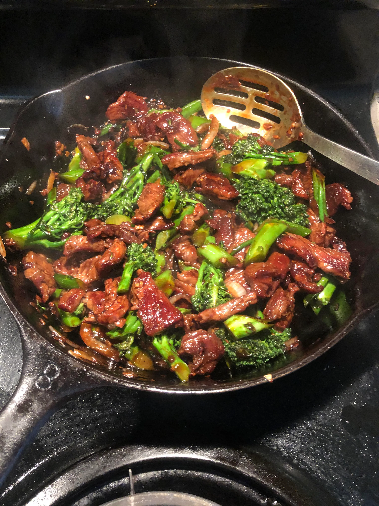

Stir fried beef with broccoli

Ingredients
- Skirt steak sliced into thin pieces
- Light soy sauce
- Sesame oil
- Shaoxing wine
- MSG
- Cornstarch
- Baking soda
- Kosher salt
- Sugar
- Oyster sauce
- Dark soy sauce
- Broccoli
- Garlic
- Ginger
- Peanut oil
Steps
- Marinade beef and massage the meat for at least 30 seconds
- To make the sauce, combine soy sauce, wine, vinegar, oyster sauce and water
- Heat up water in a wok and after it boils, add the broccoli and cook until tender-crisp
- Heat the wok over high heat until lightly smoking, then add the beef and cook until lightly seared
- Add garlic and ginger and stir-fry until fragrant
- Add Shaoxing wine, sauce mixture and constarch slurry to the wok
- Serve immediately with white steamed rice
to the homepage